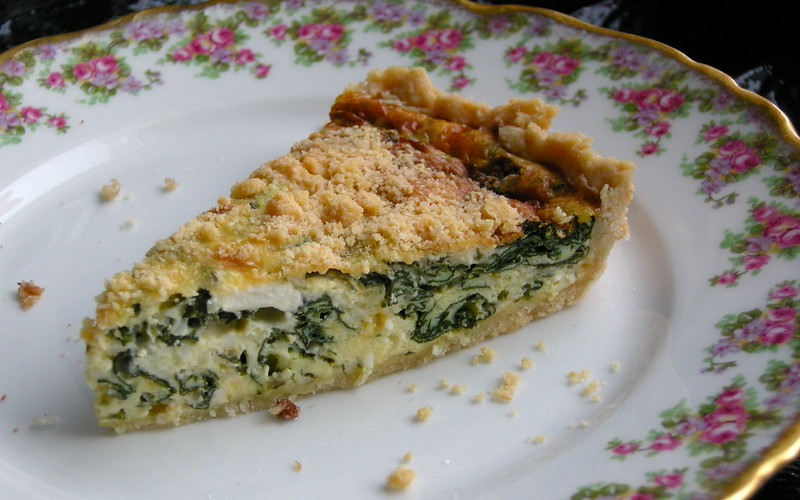

Home
Crustless Spinach Quiche

Description
Easy to make, taking less than an hour, this light and tasty quiche is perfect for brunch.
Ingredients
- Eggs
- Spinach
- Onion
- Cheese
- Salt
- Pepper
Steps
- Cook the onion and spinach.
- Whisk the eggs and seasonings, then stir in vegetables.
- Pour mixture into a greased dish and cook until quiche is firm.